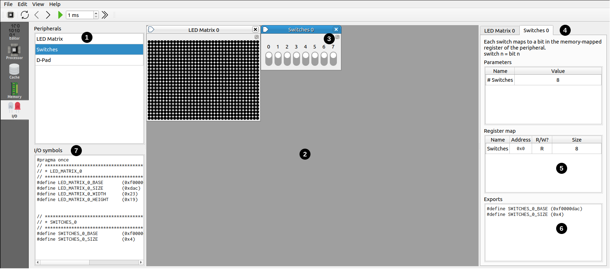

แท็บ I/O — Memory-mapped I/O
เพิ่มอุปกรณ์จำลอง เช่น LED matrix, switches, ปุ่มกด เข้าสู่ระบบ แล้วเชื่อมต่อกับโปรแกรมผ่าน memory-mapped I/O — สร้างระบบ embedded ขนาดเล็กได้ภายในไม่กี่นาที

โครงสร้างหน้าจอ
| หมายเลข | ส่วน | คำอธิบาย |
|---|---|---|
| 1 | Device list | รายการอุปกรณ์ที่มีให้เลือก — Double-click เพื่อสร้าง instance |
| 2 | Active devices | พื้นที่แสดงอุปกรณ์ที่กำลังใช้งาน |
| 3 | Pop-out button | ดึงอุปกรณ์ออกเป็นหน้าต่างลอย เพื่อดูพร้อมกับแท็บอื่นได้ |
| 4 | Device details | รายละเอียดของอุปกรณ์ที่เลือก |
| 5 | Register map | รายชื่อ register, address offset, สิทธิ์อ่าน/เขียน, bit-width |
| 6 | Exported symbols | ชื่อตัวแปรที่ใช้ใน assembly/C ได้ (เช่น LED_MATRIX_0_BASE) |
| 7 | All exported definitions | รวม define ทั้งหมดของอุปกรณ์ที่สร้างไว้ |
วิธีใช้อุปกรณ์ในโปรแกรม
ในภาษา Assembly
ใช้ชื่อ symbol ของอุปกรณ์ที่ปรากฏใน Exported symbols ได้ทันทีในที่ที่รับ immediate value ได้:
li a0 LED_MATRIX_0_BASE # โหลด base address ของ LED matrix
li a1 LED_MATRIX_0_WIDTH # โหลดความกว้างในภาษา C
เพิ่ม include header แล้วใช้ #define ได้เลย:
#include "ripes_system.h"
int main() {
volatile unsigned* leds = (unsigned*) LED_MATRIX_0_BASE;
volatile unsigned* switches = (unsigned*) SWITCHES_0_BASE;
// ...
}ตัวอย่าง: Switches + LEDs
ตัวอย่างนี้แสดงการเขียนโปรแกรมให้สวิตช์ควบคุม LED แต่ละดวง
ขั้นที่ 1 — สร้างอุปกรณ์
- ไปที่แท็บ I/O
- Double-click LED Matrix ที่ device list
- เลือก LED Matrix ที่เพิ่งสร้าง ไปที่ Parameters: ตั้ง
Height = 1,Width = 8, เพิ่ม LED size ให้ใหญ่ขึ้น - Double-click Switches เพื่อสร้าง switch panel
ขั้นที่ 2 — โหลดโปรแกรม
เลือก File → Load Example → C → switchesAndLeds.c
หลักการของโปรแกรม: โหลด base address ของ LED matrix และ switches แล้ววนตรวจสอบ bitmask ของ switches ทีละ bit — ถ้า bit ใดเปิดอยู่ ก็ทำให้ LED ที่ตำแหน่งนั้นสว่าง
ขั้นที่ 3 — รันและทดสอบ
- กดปุ่ม Build (Ctrl+B) เพื่อ compile
- กลับมาที่แท็บ I/O
- กด Run เพื่อรันโปรแกรม
- คลิกสลับ switch ดู — LED ตำแหน่งนั้นควรสว่างขึ้น
ความเร็วในการ Simulate
เมื่อทำงานกับ I/O อยากให้ตอบสนองเร็ว ให้:
- สลับมาใช้ Single Cycle processor
- ลดค่า "Max. cache plot cycles" ในหน้า Settings
เปรียบเทียบ Run กับ Step
ลองทดลองเอง:
- กด Run — การตอบสนองจาก switch ไปสว่างที่ LED แทบจะทันที
- กด F6 (Step) — สลับสวิตช์แล้วต้องกด step หลายครั้งกว่า LED จะเปลี่ยน เพราะ clock cycle ต่ำมาก
นี่คือการจำลองความรู้สึกของการรัน firmware ใน CPU ความเร็วต่ำ
อุปกรณ์ที่มีให้เลือก
- Switches — แผงสวิตช์ที่กำหนดจำนวนได้ อ่านสถานะเป็น register หนึ่งตัว
- LED Matrix — กริด LED ที่กำหนดขนาดและสีได้ เขียนค่าผ่าน register ตามตำแหน่ง
- Button — ปุ่มกดที่ส่ง interrupt ได้
- D-pad — ปุ่ม 4 ทิศทาง
รายการอุปกรณ์อาจเปลี่ยนแปลงตามเวอร์ชันของ Ripes — ตรวจสอบในหน้า device list ของเครื่องคุณ